Linux Setup (Proton)
Install and run SimDuty with ATS/ETS2 on Linux through Proton Experimental and Protontricks.
Overview
This guide explains how to run SimDuty on Linux with ATS or ETS2 using Proton.
The same logic applies to both games. This page uses ATS examples for path naming and menu wording.
This Linux workflow is community-validated and documented from real-world use. Full credit goes to StupidDog for creating and sharing the original tutorial sequence.
Fast path vs safe path
Fast path (experienced Linux users)
- Force Proton Experimental.
- Copy DLL files to
bin/win_x64/plugins. - Add
simdutyandscs-telemetryDLL overrides in the same prefix. - Install .NET Desktop Runtime x64 in the same prefix and validate SDK/NET.
Safe path (first-time Linux setup)
- Follow every step in this guide sequentially without skipping screenshots.
- Validate each checkpoint before moving to the next section.
- If any status is unclear, stop at that step and resolve before continuing.
- Use Troubleshooting only after finishing the deterministic setup order once.
Requirements
- Steam installed on Linux with ATS or ETS2 owned and installed.
- Proton Experimental available in Steam compatibility tools.
- SimDuty package extracted with access to
simduty.dllandscs-telemetry.dll. - Protontricks installed (package manager or Flathub).
Step 1: Force Proton Windows build
- In Steam, open ATS (or ETS2) properties.
- Go to
Compatibility. - Enable
Force the use of a specific Steam Play compatibility tool. - Select
Proton Experimental. - Allow Steam to update/reinstall the game files to the Windows-compatible build.
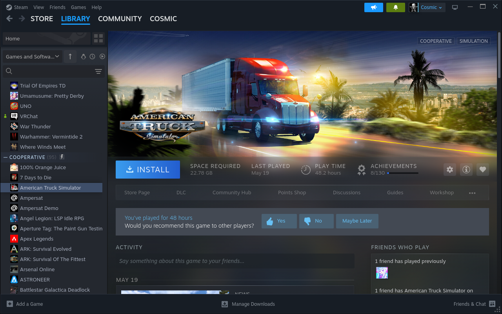
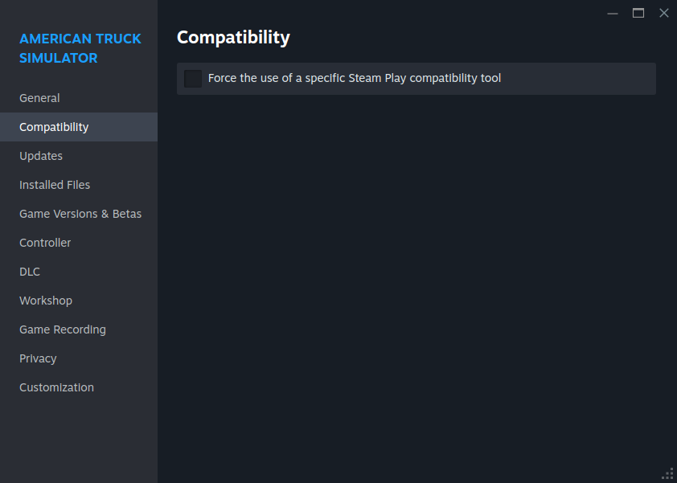
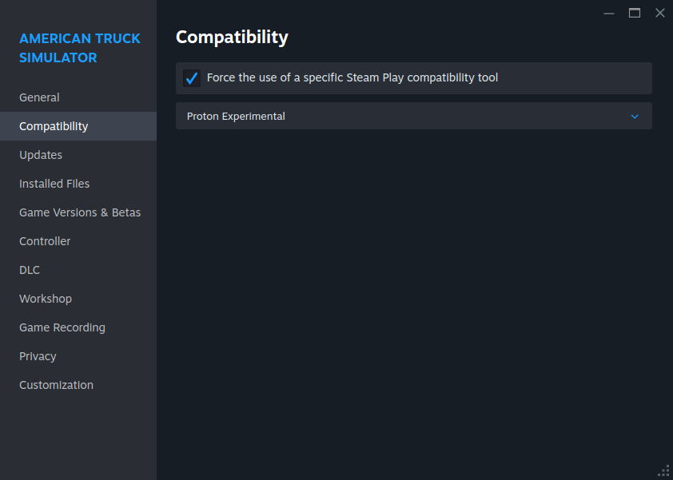
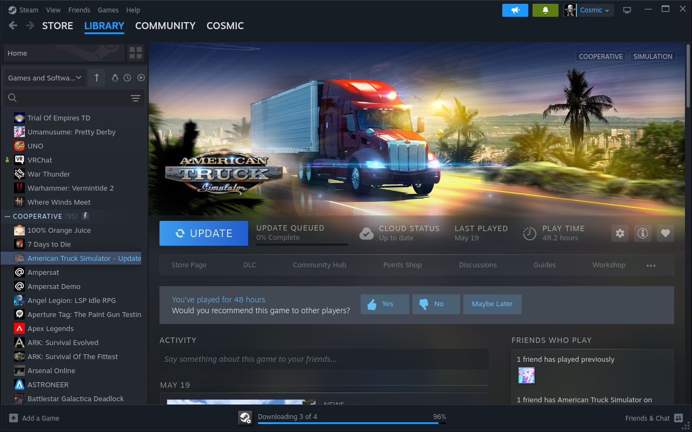
Step 2: Install SimDuty DLL files
- Open your extracted SimDuty folder.
- Copy
simduty.dllandscs-telemetry.dll. - Paste both files into the game plugins folder:
Target folders:
- ATS:
.../American Truck Simulator/bin/win_x64/plugins - ETS2:
.../Euro Truck Simulator 2/bin/win_x64/plugins
bin/win_x64/plugins for the game you are launching.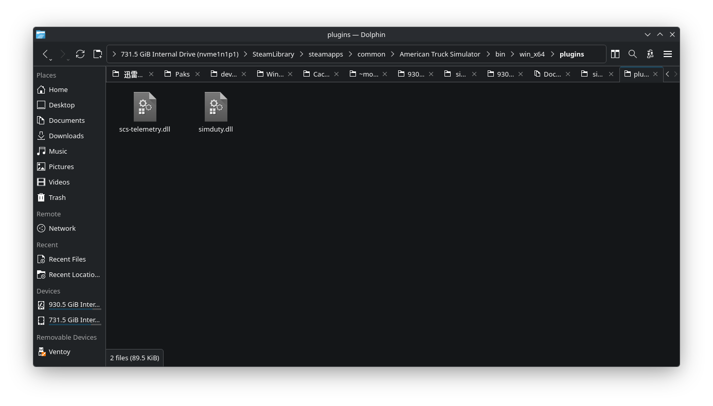
bin/win_x64/plugins folder.Step 3: Install Protontricks
Install Protontricks with the method that matches your distribution.
Command reference:
- Arch/Arch-based:
sudo pacman -S protontricks - Mint/Debian/Ubuntu-based:
sudo apt install protontricks - Alternative: install from Flathub
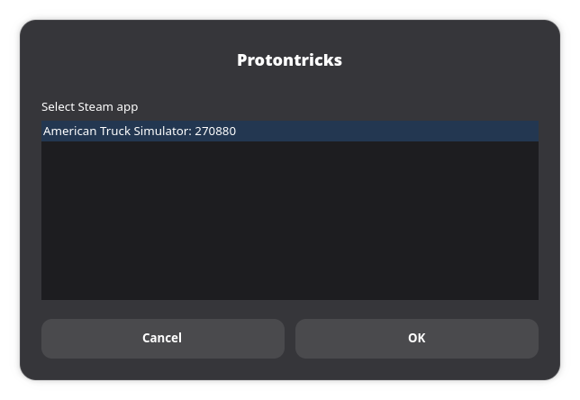
Step 4: Configure DLL overrides in winecfg
- Open Protontricks and select the ATS (or ETS2) prefix.
- Choose
Select the default wineprefix. - Choose
Run winecfg. - Open the
Librariestab. - Add DLL override entries for
simdutyandscs-telemetryin theLibrariestab. - Click
Apply, thenOK.
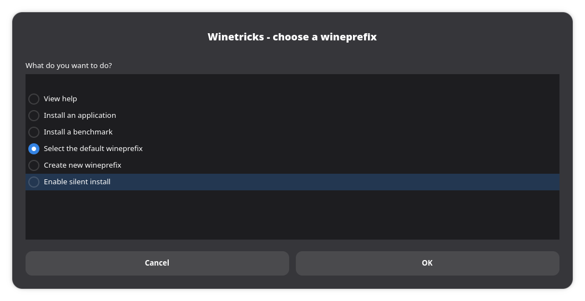
Select the default wineprefix before opening winecfg.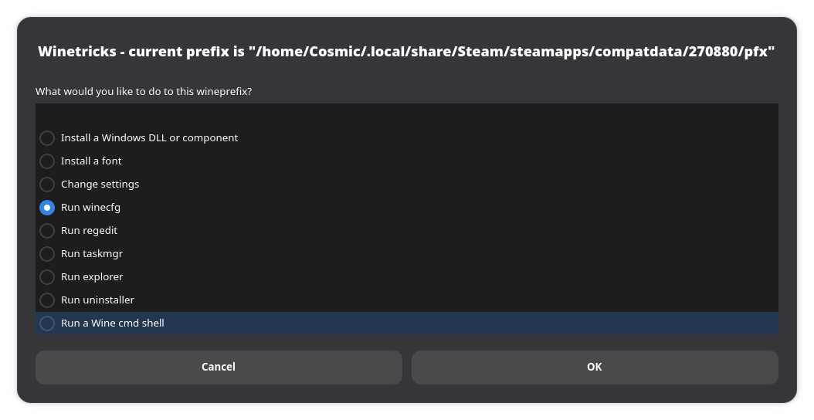
Run winecfg.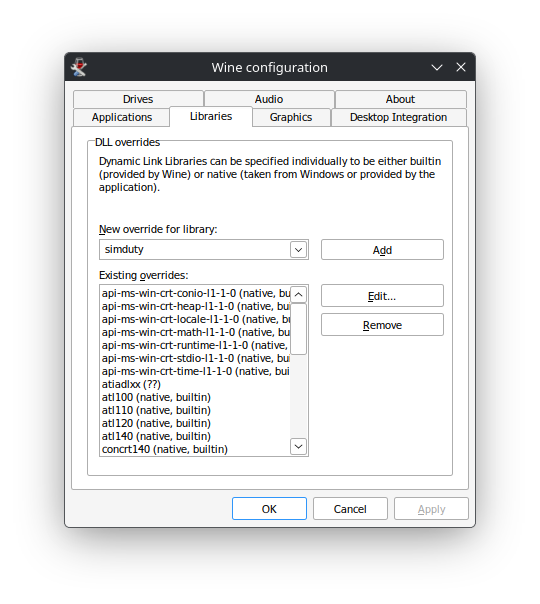
Libraries, add simduty in New override for library, then click Add.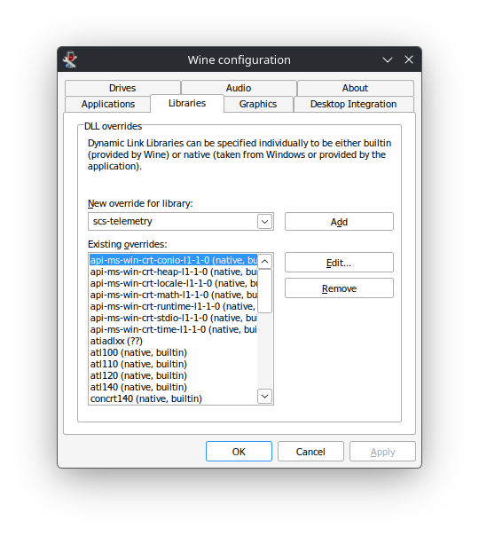
scs-telemetry the same way, then click Apply and OK.Step 5: Install .NET in the same prefix
- Open SimDuty through Protontricks in the ATS/ETS2 Proton prefix.
- If prompted to download .NET Desktop Runtime (x64), allow the download.
- Run the installer and complete setup normally.
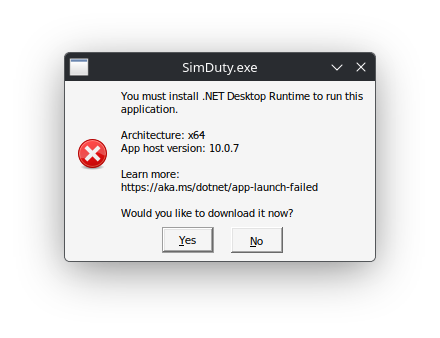
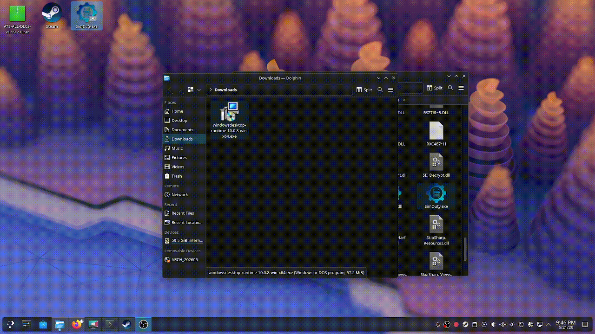
Step 6: Launch order and SDK permission
- Launch ATS/ETS2 first inside Proton and enter gameplay.
- Accept the SDK/plugin permission prompt when the game asks.
- Launch SimDuty in the same ATS/ETS2 Proton prefix.
- Enter cabin and drive briefly to initialize telemetry.
Path and command reference
Core commands:
sudo pacman -S protontrickssudo apt install protontricks
Core folders:
bin/win_x64/pluginsinside ATS/ETS2 game install- ATS/ETS2 Proton prefix selected in Protontricks
Validation checkpoint
- Game runs with Proton Experimental (Windows build path active).
- Both SimDuty DLL files are present in
bin/win_x64/plugins. - DLL overrides are configured in the correct ATS/ETS2 prefix.
- SimDuty and .NET run in the same game prefix.
- SDK permission accepted in game and telemetry initialized in-cabin.
- SDK and NET show stable OK state.
Quick support
Symptom: SDK/NET stays disconnected.
- Check: Proton build mode, DLL path, override entries, and launch order.
- Fix: re-apply Proton Experimental, re-copy DLL files, re-check winecfg libraries, then relaunch game first and SimDuty second.
Symptom: SimDuty does not start in Linux.
- Check: whether SimDuty is opened inside the ATS/ETS2 prefix and whether .NET completed installation.
- Fix: re-open via Protontricks, install .NET when prompted, and test again.
Symptom: Plugin prompt never appears in game.
- Check: correct game folder and file names in
win_x64/plugins. - Fix: recopy both DLLs and fully restart Steam + game.
Credits
This Linux setup workflow and media reference are based on the community tutorial created by StupidDog. Full credit to StupidDog for documenting and validating this Proton path.